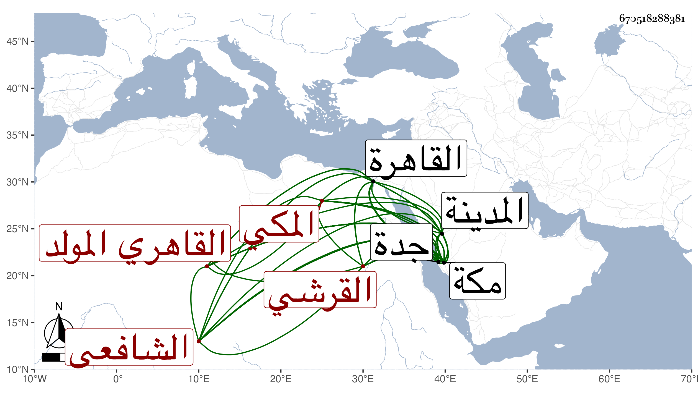

0902Sakhawi.DawLamic.ITO20230111-ara1.EIS1600.670518288381
Biography ID: 670518288381
717
محمد بن محمد بن محمد بن محمد بن حسين بن علي بن أحمد بن عطية بن ظهيرة الجمال أبو المكارم بن النجم أبي المعالي بن الكمال أبي البركات بن الجمال أبي السعود القرشي القاهري المولد المكي الشافعي والد عبد الباسط الماضي ويعرف كسلفه بابن ظهيرة ويقال له ابن نجم الدين . ولد في نصف شوال سنة أربع وعشرين وثمانمائة بالقاهرة وأمه حبشية لأبيه وحمل إلى مكة في موسم التي بعدها فنشأ بها وحفظ القرآن وأربعي النووي وجمع الجوامع والكافية العربية لابن الحاجب ومن أول ألفية ابن ملك إلى الاستثناء والنصف الأول من التنبيه واشتغل بمكة على أبيه وقاضيها عمه أبي السعادات فقرأ عليه قطعة من المنهاج ومن مناسك الشرح الكبير وحضر عند الكمال السيوطي بحث الحاوي الصغير وكذا حضر عند البدر حسين الأهدل وأحمد الضراسي في الفقه وقرأ على البرهان الهندي شرح الشمسية للقطب وفي كل من الكافية والألفية والتلخيص وعلى ابن قديد التوضيح لابن هشام وحضر عنده بعض شرح المنهاج الأصلي للأسنوي وبعض شرح الشمسية للقطب وعلى إمام الكاملية بعض شرحه على البيضاوي وعلى ابن الهمام بالمدينة ومكة غالب تحريره في الأصول وعلى ابن سارة شرح إيساغوجي وحضر عنده في التلخيص كما أخبر باكير هذا في آخرين بمكة كالبلاطنسي والصدر اليليمد الخافي وأنه دخل القاهرة في سنة سبع وأربعين فأقام فيها تلك السنة وأخذ عن شيخنا والقاياتي والونائي والبوشي والعيني والشمس الكريمي والشمني وابن البلقيني والمناوي وكان في جملة الحاضرين لختم شرح البخاري عند مؤلفه العيني فكان يوما مشهودا وكان مما قرأه على الكريمي في جمع الجوامع وحضر عنده في المعاني والبيان وعلى الشمني الشمسية وحضر دروسه في كل من المغني وحاشيته ومختصر ابن الحاجب وكذا أحضر في المحرم سنة ثمان وعشرين على ابن الجزري بعض أبي داود وبعض مسند أحمد وسمع من أحمد بن إبرهيم المرشدي البردة وغيرها ومن التقي المقريزي إمتاع الأسماع له ومن أبي المعالي الصالحي ختم ابن حبان ومن أبي الفتح المراغي والتقي بن فهد وعمه أبي السعادات وآخرين ، وأجاز له التقي الفاسي وابن سلامة والتاج بن بردس وأخوه العلاء والشمس البرماوي والشامي الحنبلي وخلق ، وناب في القضاء بجدة ومكة عن عمه أبي السعادات ثم بمكة في سنة ثلاث وستين عن ابن عمه البرهان وكذا خطب عنه في سنة ست وستين وخمسين ثم عنه وعن أخويه الكمال أبي البركات والقخر أبي بكر في سنتي ست وستين والتي بعدها وتمول جدا من كثرة معاملاته وجهاته ونحو ذلك وتقلل من الأحكام وأكثر من الانجماع والاشتغال بشأنه مع المداومة على الطواف والتلاوة وغيرهما من العبادات ودرس الفقه وأصوله والعربية وممن أخذ عنه ابنه وابن عمه الفخري أبو بكر قرأ عليه جانبا من ابن عقيل وقريبه المحب بن عبد الحي والشهاب الأبشيهي . مات في تاسع عشرى رجب سنة إحدى وتسعين رحمه الله وإيانا .
